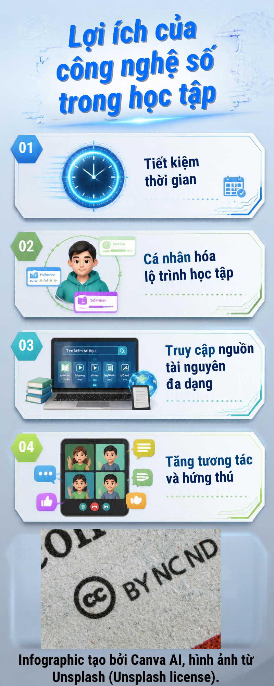

Lợi ích của công nghệ số trong học tập
Khám phá cách công nghệ số giúp tiết kiệm thời gian, cá nhân hóa lộ trình và tăng hứng thú học tập.
Infographic

Khám phá cách công nghệ số giúp tiết kiệm thời gian, cá nhân hóa lộ trình và tăng hứng thú học tập.
